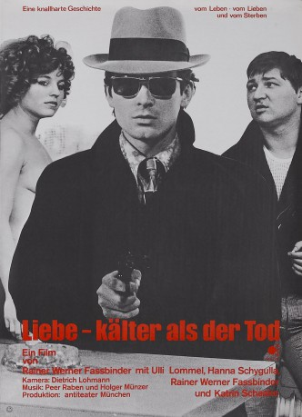
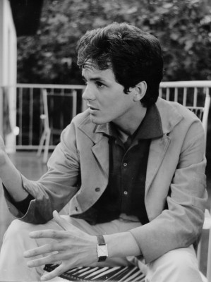
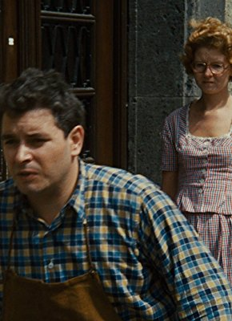

#9156 Liebe ist kälter als der Tod
 
 IMDB-Wertung: 6.7 / 10
IMDB-Wertung: 6.7 / 10  Metascore: 0
Metascore: 0 
Unusual gangster story, in which a small-time pimp Franz, who is torn between his mistress and Bruno the gangster sent after him by the syndicate that he has refused to join. Things are turned on their head when Franz and Bruno become friends, to the point that they even share Franz's girlfriend Joanna. But Joanna soon becomes bored of Bruno.
Jahr: 1969
Dauer: 88 Minuten
FSK: 16
Land: West-Deutschland Studio: e-m-s the DVD-CompanyTonspuren:
Untertitel:
Auflösung: 1080p (1792x1080) Größe: 5591 MB
Genre: Komödie, Krimi
Regisseur: Rainer Werner Fassbinder
Drehbuch: Rainer Werner Fassbinder
Soundtrack: Holger Münzer, Peer Raben
Darsteller:
-  Ulli Lommel als Bruno
 Hanna Schygulla als Johanna
Hanna Schygulla als Johanna- Katrin Schaake als Dame im Zug
-  Hans Hirschmüller als Peter
 Kurt Raab als Aufsichtsperson im Kaufhaus
Kurt Raab als Aufsichtsperson im Kaufhaus Peter Berling als Illegaler Waffenhändler
Peter Berling als Illegaler Waffenhändler Rudolf Waldemar Brem als Motorradpolizist
Rudolf Waldemar Brem als Motorradpolizist Ingrid Caven als Prostituierte (uncredited)
Ingrid Caven als Prostituierte (uncredited) Rainer Werner Fassbinder als Franz Walsch (uncredited)
Rainer Werner Fassbinder als Franz Walsch (uncredited) Irm Hermann als Sonnenbrillenverkäuferin (uncredited)
Irm Hermann als Sonnenbrillenverkäuferin (uncredited)- Liz Söllner als Zeitungsverkäuferin
- Gisela Otto als Prostituierte
- Ursula Strätz als Prostituierte
- Monika Nüchtern als Kellnerin beim Türken
- Les Olvides als Georges
- Peer Raben als Jürgen (also Waffenhändler )
- Howard Gaines als Raoul
- Peter Moland als Leiter des Syndikatsverhörs
- Anastassios Karalas als Türke
- Yaak Karsunke als Kommissar
- Hannes Gromball als Kunde bei Joanna
- Gottfried Hüngsberg als Polizist (uncredited)
- Franz Maron als Polizist (uncredited)
Datei: X:\1969\Liebe ist kälter als der Tod (1969, FSK16, 1792x1080).mkv seit 19.07.2018
Festplatte: HD 1900-1970
 Es gibt insgesamt 22 Filme in der Gruppe '1969'
Es gibt insgesamt 22 Filme in der Gruppe '1969'